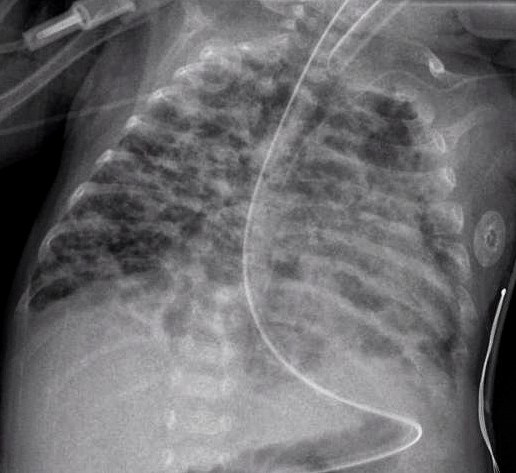

606 — Bệnh phổi mạn tính ở trẻ sinh non (BPD): phân độ NICHD 2018 / Jensen 2019, hình ảnh & theo dõi
Tags: pattern:bpd pattern:u-khi pattern:bubbly-cystic pattern:mo-ke vung:phoi-nhi score:NICHD-2018 score:Jensen-2019 protocol:X-quang-nguc-nhi protocol:CT-nguc-nhi protocol:MRI-UTE
Mức chắc chắn (certainty): tổng hợp y văn (literature synthesis) — tự biên từ bài tổng quan có hình ảnh gốc (Higano et al., Pediatr Radiol 2022, PMC8921108; Dini et al., Front Pediatr 2024, PMC11303306) và nghiên cứu đoàn hệ (Ito et al., Clin Exp Pediatr 2026, PMC12963941), không gắn một bệnh án đơn lẻ.
1. Tổng quan bệnh học – cơ chế hình ảnh: phổi "ít phế nang, nhiều khoảng khí"
- Định nghĩa lâm sàng: BPD (bronchopulmonary dysplasia) là nhu cầu oxy/hỗ trợ hô hấp kéo dài tới 36 tuần tuổi sau kinh nguyệt (post-menstrual age, PMA) ở trẻ sinh dưới 32 tuần. Đây là bệnh phổi mạn hay gặp nhất của trẻ cực non; tỷ lệ 20–75% giữa các trung tâm (khác biệt về dân số, tiêu chuẩn và chiến lược thông khí), và trên 50% ở một số đoàn hệ trẻ rất non.
- Bệnh học: không phải "viêm phổi kéo dài" mà là rối loạn phát triển phế nang và mạch máu phổi — phế nang to, thưa, vách mỏng bất thường; mao mạch phổi giảm và tái cấu trúc. Bốn trục tổn thương: oxy hóa quá mức (oxidative stress), viêm, loạn sinh mạch (dysregulated angiogenesis) và sửa chữa mô bất thường. Trước sinh: chorioamnionitis, bất thường bánh nhau, chậm tăng trưởng, yếu tố gen; sau sinh: thông khí áp lực, oxy, nhiễm trùng, dinh dưỡng kém.
- TẠI SAO phim thay đổi theo thời gian — "ba thì" của BPD:
- Ngày 1: hạt mịn lan tỏa ± phế quản hơi = RDS (thiếu surfactant) — xem 610.
- Tuần 1–2: mờ đục/"phổi rỉ dịch" (leaky lung) — khoảng 55% trẻ non tháng tiến triển tới thì này; chỉ 11% trong số đó sáng lại hoàn toàn.
- Tuần 3–4 trở đi: ứ khí + đám mờ thô + bóng khí "bubbly/cystic" — phế nang đã bị tổn thương thoát khí vào khoảng kẽ và tạo các khoang khí nhỏ; nhu mô còn lại xẹp/đông đặc rải rác. Đây là hình ảnh đặc trưng của BPD "kinh điển" (thể Northway).
- TẠI SAO bóng khí "đen" trên X-quang: khí có đậm độ rất thấp (−1000 HU trên CT), nhu mô phổi lành khoảng −700 đến −900 HU; chênh lệch này tạo vùng sáng trên phim. Bóng khí BPD không có vách rõ như nang thật, phân bố rải rác hai bên, xen kẽ đám mờ — khác nang bẩm sinh (CPAM) thường khu trú một thùy, có vách, chiếm thể tích.
- TẠI SAO ứ khí: đường thở nhỏ dễ xẹp khi thở ra + mất đàn hồi phổi → khí bị "giam" thì thở ra; trên phim thấy cơ hoành dẹt, khoang liên sườn rộng, phổi căng — dấu hiệu thể tích phổi tăng, ngược với RDS cấp (thể tích thấp).
- Ngưỡng định lượng quan trọng:
- Bubbly/cystic trên X-quang ngày 28 dự báo oxy tại nhà mạnh hơn cả tuổi thai, cân nặng, chorioamnionitis; trẻ không có thay đổi này chỉ 2% cần oxy tại nhà (đoàn hệ > 8.000 trẻ, dẫn qua PMC8921108).
- Tăng áp lực động mạch phổi (BPD-PH) gặp 20–40% ở BPD nặng — tiên lượng xấu, nhập viện nhiều hơn, tử vong cao hơn (PMC8921108).
- Tracheobronchomalacia gặp 10–48% trẻ BPD được nội soi phế quản (PMC8921108).
- BPD nặng làm giảm khả năng khuếch tán dù thể tích phế nang bình thường — hệ quả của giảm số phế nang, không phải "phổi nhỏ".
2. Mẫu hình + chẩn đoán phân biệt theo vị trí & thời điểm (Gamut)
- Mẫu hình "BPD điển hình" (trung tâm, hai bên, đối xứng): ứ khí toàn phổi + đám mờ thô dạng lưới/đường + bóng khí nhỏ rải rác ở trẻ < 32 tuần, đang hoặc vừa cai hỗ trợ hô hấp, chụp quanh 36 tuần PMA.
- Gamut theo "thời điểm xuất hiện":
- Cấp, ngày 1–7: RDS (hạt mịn, thể tích thấp), TTN (đủ tháng, mổ đẻ, ứ khí + dịch rãnh), MAS (già tháng, đám thô), PIE (bóng khí tuyến tính/tổ ong cố định, xuất hiện đột ngột trên nền thở máy) — xem 611.
- Bán cấp, tuần 2–4: viêm phổi do RSV/ virus (ứ khí + xẹp vi mô, không có bóng khí mạn), viêm phổi hít sặc (đám mờ thùy dưới phải, lặp lại cùng vị trí), phù phổi (tim to, Kerley).
- Mạn, sau 36 tuần PMA: BPD; CPAM type 1/2 (nang lớn một thùy, chẩn đoán trước sinh); congenital lobar overinflation/CLO (một thùy căng, đẩy trung thất); giãn phế quản (CF, sau nhiễm trùng — thành phế quản dày, dấu ấn nhẫn); PIG (pulmonary interstitial glycogenosis — mờ kẽ lan tỏa ở trẻ non tháng, hiếm); Wilson–Mikity (thể cũ ở trẻ non tháng không thở máy, bóng khí muộn).
- Gamut theo biến chứng (đọc thêm trên CT/MRI): BPD + tracheobronchomalacia (đường thở xẹp thì thở ra), BPD + PH (thất phải giãn, vách liên thất dẹt), BPD + giãn phế quản, BPD + tăng trưởng phổi không đều.
- Mnemonic "BUBBLY": Bronchopulmonary dysplasia (bóng khí hai bên, non tháng), Unexplained air-trapping (ứ khí thì thở ra), Birth weight thấp, Bilateral coarse opacities, Leaky lung giai đoạn sớm, Young gestational age (< 32 tuần).
3. Bảng so sánh phân biệt (ma trận đối chiếu)
| Thực thể (entity) | Hình ảnh điển hình (XR/CT) | Chốt vào (rule-in) | Chốt loại (rule-out) | Gợi ý xác nhận |
|---|---|---|---|---|
| BPD | Hai bên, đối xứng: ứ khí + đám mờ thô + bóng khí nhỏ; CT: mosaic, dày thành phế quản, dải/tam giác dưới màng phổi | Trẻ < 32 tuần + còn cần hỗ trợ hô hấp tại 36 tuần PMA + ứ khí/bóng khí hai bên | Bóng khí khu trú một thùy có vách rõ → CPAM; bóng khí tuyến tính cố định xuất hiện cấp → PIE | Chẩn đoán lâm sàng; X-quang để theo dõi, CT/MRI khi cần phenotype |
| PIE | Bóng khí li ti/tuyến tính dọc mạch–phế quản, thùy căng, cố định | Xuất hiện cấp trên nền thở máy; bóng khí cố định, không đổi tư thế | Bóng khí rải rác hai bên, xuất hiện muộn, kèm đám mờ thô → BPD | X-quang lặp lại 24–48 giờ; CT thì thở ra |
| CPAM type 1 | Nang lớn > 2 cm, một thùy, vách rõ, có thể đẩy trung thất | Nang lớn khu trú + chẩn đoán trước sinh/thai nhi | Tổn thương hai bên, đối xứng, không có nang trội → BPD | CT ngực (không cấp cứu); MRI thai |
| CLO (lobar overinflation) | Một thùy quá sáng, căng, mạch thưa, đẩy trung thất; thường thùy trên trái | Một thùy căng + đẩy trung thất + mạch thưa khu trú | Ứ khí toàn phổi hai bên → BPD/PIE | CT thì hít vào–thở ra |
| Viêm tiểu phế quản/viêm phổi virus | Ứ khí + xẹp vi mô, đám mờ quanh rốn phổi, không có bóng khí mạn | Sốt, ho, RSV dương; tổn thương thay đổi nhanh theo đợt | Bóng khí tồn tại qua nhiều lần chụp, không theo đợt nhiễm → BPD | PCR virus; X-quang lặp lại |
| Giãn phế quản (CF/sau nhiễm) | Thành phế quản dày, dấu ấn nhẫn, đường ray, tắc nhầy | Phế quản giãn không hồi phục + tắc nhầy + viêm xoang | Phế quản không giãn, chỉ dày quanh phổi non tháng → BPD | HRCT; test mồ hôi/CFTR |
| BPD + PH | Cung động mạch phổi giãn, thất phải to, vách liên thất dẹt thì tâm thu | Siêu âm tim: vận tốc hở ba lá > 2,8 m/s hoặc thất phải giãn | Tim to do shunt trái–phải (PDA/VSD) không kèm tăng áp phổi | Siêu âm tim là chốt; MRI tim khi cần |
4. Protocol chụp + hệ phân độ chuẩn hóa
- X-quang ngực: AP nằm ngửa tại giường, không dùng thường quy để chẩn đoán BPD; vai trò chính là theo dõi biến chứng (PIE, tràn khí, xẹp, viêm phổi) và đánh giá ứ khí/bóng khí khi lâm sàng thay đổi. Chụp lặp lại theo chỉ định, không theo lịch cố định.
- CT ngực (low-dose): chỉ định khi cần đánh giá đường thở trung tâm (tracheobronchomalacia), mosaic/ứ khí, hoặc trước can thiệp. Kỹ thuật: lát ≤ 1 mm, liều thấp theo ALARA; có thể chụp thì hít vào – thở ra hoặc động (4D) để thấy đường thở xẹp; trẻ không hợp tác thường cần an thần — cân nhắc lợi/hại.
- MRI phổi UTE/ZTE: không tia X; TE cực ngắn (0,05–0,1 ms) mới thấy được nhu mô phổi (T2* phổi 0,5–3 ms nên chuỗi Cartesian thường "mất" tín hiệu). Chỉ dùng trong nghiên cứu/chuyên sâu; siêu âm tim vẫn là chuẩn sàng lọc PH.
- Hệ phân độ (bắt buộc ghi rõ phiên bản):
- NICHD 2001: nhẹ (khí trời tại 36 tuần PMA), trung bình (FiO₂ < 0,30), nặng (FiO₂ ≥ 0,30 hoặc thở áp lực dương).
- NICHD 2018 (Higgins): đánh giá tại 36 tuần PMA — grade I: cannula ≤ 2 L/phút; grade II: cannula > 2 L/phút hoặc NIPPV; grade III: thở máy xâm lấn, chia IIIA (đánh giá < 32 tuần PMA) và IIIB (≥ 32 tuần PMA).
- Jensen 2019 (NICHD NRN): grade 1 cannula ≤ 2 L/phút; grade 2 > 2 L/phút hoặc NIV; grade 3 thở máy xâm lấn — bất kể FiO₂. Xây dựng trên 2.677 trẻ < 32 tuần; dự báo tử vong/bệnh hô hấp nặng và tử vong/NDI trung bình–nặng tốt hơn NICHD 2001, dù ưu thế không đồng nhất ở 11 nghiên cứu sau.
- Phân loại Nhật Bản 2023 (MHLW) dùng SGA + hình ảnh bubbly/cystic + chorioamnionitis để phân tầng sớm; trong 194 trẻ, bubbly/cystic là yếu tố độc lập (aOR 10,88; KTC 4,43–26,72) cho BPD nặng — hình ảnh có giá trị tiên lượng, không chỉ mô tả.
flowchart TD
A[Trẻ sinh non dưới 32 tuần] --> B[Đánh giá tại 36 tuần PMA]
B --> C{Đang hỗ trợ hô hấp gì?}
C -->|Không cần hỗ trợ| D[Không BPD]
C -->|Cannula tối đa 2 L mỗi phút| E[BPD grade 1]
C -->|Cannula trên 2 L mỗi phút hoặc NIV| F[BPD grade 2]
C -->|Thở máy xâm lấn| G[BPD grade 3]
G --> H{Thời điểm đánh giá so với 32 tuần PMA}
H -->|Trước 32 tuần PMA| I[Grade 3A]
H -->|Từ 32 tuần PMA| J[Grade 3B]
E --> K[Theo dõi tăng trưởng phổi, dinh dưỡng, tầm soát PH]
F --> K
I --> K
J --> K
- Theo dõi & điều trị (định lượng):
- Mục tiêu SpO₂ 90–95% (Mỹ); nhắm 85–89% làm tăng tử vong trước xuất viện, không giảm BPD.
- Caffeine sớm (< 3 ngày) giảm BPD/ngưng thở; liều duy trì 10–20 mg/kg/ngày (nhóm liều cao cai máy tốt hơn, giảm BPD trung bình–nặng).
- Corticoid sau sinh: dexamethasone liều thấp DART 0,89 mg/kg trong 10 ngày giảm BPD nhưng tăng nguy cơ thủng ruột, chậm tăng trưởng, di chứng thần kinh — không dùng thường quy.
- Surfactant, thông khí bảo vệ phổi, dinh dưỡng đủ năng lượng là nền tảng; vitamin A từng được dùng nhưng bằng chứng không đồng nhất.
- BPD-PH: sàng lọc bằng siêu âm tim; 20–40% ở BPD nặng; cân nhắc sildenafil và thông tim khi nặng — phối hợp tim mạch.
- Theo dõi dài hạn: chức năng hô hấp, tái nhập viện do RSV, tăng trưởng, phát triển thần kinh; nguy cơ COPD sớm ở tuổi trưởng thành.
5. Biến thể bình thường và cạm bẫy
- "Bubbly" ở trẻ non tháng không luôn là BPD: PIE cũng tạo bóng khí, nhưng xuất hiện cấp, dọc mạch, cố định; PIE có thể thoái triển trong vài ngày, còn BPD là tổn thương mạn, hai bên, kèm đám mờ thô.
- Chẩn đoán BPD là lâm sàng, không phải X-quang: trẻ 36 tuần PMA vẫn cần cannula 2 L/phút vì lý do khác (tim, thần kinh, dinh dưỡng) có thể bị gán nhầm BPD; ngược lại, X-quang đẹp không loại trừ BPD.
- Đừng đoán mức FiO₂ trên phim: không thể suy ra FiO₂ từ độ đen của phổi; phải đọc bảng lâm sàng (loại hỗ trợ, lưu lượng, FiO₂).
- Tuyến ức to ở trẻ nhỏ có thể giả "khối trung thất trước" hoặc làm mờ vùng trên tim; không nhầm với khối u — kiểm tra hình dạng cánh buồm, không đẩy khí quản.
- Tim to trên phim ở BPD có thể do thất phải giãn/PHTN hoặc do PDA/VSD; đừng mặc định "tim to sinh lý".
- Satisfaction of search: thấy bóng khí BPD rồi bỏ sót tràn khí màng phổi hoặc PIE đi kèm — luôn kiểm tra bờ phổi tạng, trung thất và khoang màng tim.
- Ảnh chụp quá sớm (< 28 ngày) không dùng để phân độ BPD; phân độ chỉ có nghĩa tại 36 tuần PMA (hoặc lúc xuất viện nếu sớm hơn, tùy tiêu chuẩn).
6. Tự lượng giá — Blind Quiz
Ca 1 — Trẻ sinh 25 tuần, hiện 36 tuần PMA, vẫn thở máy. Mô tả phổi trước khi xem đáp án.

- Gợi ý lâm sàng: sinh cực non, còn nội khí quản, có dụng cụ đóng ống động mạch.
- Câu hỏi: (1) Hai dấu hiệu chính trên phim? (2) Phân độ BPD theo NICHD 2018/Jensen 2019? (3) Ba chẩn đoán phân biệt cần loại?
Bấm để hiện đáp án (findings + chẩn đoán)
- Dấu hiệu: phổi căng (ứ khí), cơ hoành dẹt; đám mờ thô hỗn hợp vùng sáng–tối, nhiều bóng khí nhỏ rải rác hai bên; trẻ còn nội khí quản.
- Chẩn đoán: BPD nặng — grade 3 (thở máy xâm lấn tại 36 tuần PMA); nếu đánh giá trước 32 tuần PMA là 3A, từ 32 tuần là 3B.
- Phân biệt: PIE (bóng khí cấp, dọc mạch, cố định), viêm phổi virus/RSV (thay đổi theo đợt), CPAM (nang khu trú một thùy) — ở đây tổn thương hai bên, đối xứng, mạn phù hợp BPD.
- Nguồn ảnh: Higano NS et al., Pediatr Radiol 2022, PMC8921108 Fig. 1, CC BY 4.0.
Ca 2 — Trẻ sinh 23 tuần, chụp ở 38 tuần PMA: X-quang và một lát CT ngực.

- Câu hỏi: CT thêm được thông tin gì mà X-quang không cho? Dấu hiệu nào gợi ứ khí/mosaic?
Bấm để hiện đáp án (findings + chẩn đoán)
- X-quang (a): phổi căng, đám mờ thô và vùng sáng không đều — BPD.
- CT (b): mosaic giảm–tăng đậm độ (ứ khí từng vùng), dày thành phế quản, dải mờ và vùng nang nhỏ; CT còn giúp đánh giá đường thở trung tâm (tracheobronchomalacia) và mức độ ứ khí — những thứ X-quang không thấy.
- Chẩn đoán: BPD; CT dùng để phenotype/đánh giá biến chứng, không phải tiêu chuẩn chẩn đoán.
- Nguồn ảnh: Higano NS et al., Pediatr Radiol 2022, PMC8921108 Fig. 3, CC BY 4.0.
Ca 3 — Phim ngực của một trẻ BPD đã biết: vì sao không phải CPAM?

- Câu hỏi: mô tả mẫu hình; nêu hai lý do loại CPAM.
Bấm để hiện đáp án (findings + chẩn đoán)
- Dấu hiệu: đám mờ thô hai bên + vùng sáng/ứ khí; thay đổi lan tỏa, đối xứng, không có nang lớn chiếm thể tích.
- Vì sao không CPAM: (1) CPAM thường khu trú một thùy, có nang lớn/vách rõ, có thể đẩy trung thất; (2) tổn thương ở đây hai bên, đối xứng, phù hợp bệnh phổi mạn của trẻ non tháng.
- Nguồn ảnh: Pulmonological, Wikimedia Commons, CC BY-SA 3.0.
Bài liên quan chéo
- 610 – Suy hô hấp sơ sinh: RDS, TTN, MAS & CDH (thì sớm của BPD)
- 611 – Khí kẽ phổi (PIE) & tràn khí áp lực ở nhũ nhi (bóng khí cấp — phân biệt)
- 605 – Siêu âm phổi có điểm (LUS) ở sơ sinh (ngưỡng surfactant, dự báo BPD)
- 613 – Viêm tiểu phế quản ở nhũ nhi (RSV) (đợt cấp trên nền BPD)
- 614 – Bệnh tiểu phế quản tắc nghẽn & Swyer–James (mosaic mạn)
- 619 – Di chứng hô hấp sau hoại tử phổi & cắt thùy (giãn phế quản, phổi bó)
- 600 – Tổng quan Hệ Nhi khoa
Không dùng để chẩn đoán độc lập khi chưa có người hướng dẫn.